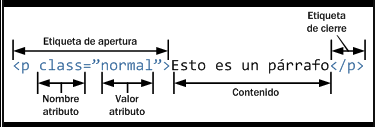

El lenguaje HTML proporciona los cimientos de la web. los cimientos fueron básicos y estáticos, ya que consistían en líneas de texto, enlaces e imágenes. no siempre hubo servicio web como en la actualidad o servicios electrónicos.
HTML es un lenguaje más utilizado todos los desarrolladores comienzan aprendiendo este lenguaje.
Se utiliza en la web para representa la información intercambiada por los usuarios en forma de documentos de hipertexto.
Dichos documentos contienen una serie de etiquetas que indican al navegador como interpretar y dar el formato al texto plano.
La utilidad de HTML viene dada por su propio carácter estandarizado. Esto quiere decir que se puede crear documentos en cualquier formato. sin embargo, HTML es un estándar y otros tipos de formatos no lo son. Así que cualquier navegador que haga uso de las normas estándar de visualización de documentos web será capaz de leer e interpreta adecuadamente el HTML pero puede tener problemas a la otra de interpretar en otro formato. Por esta razón en HTML se tiene la seguridad que los documentos siempre se podrán leer perfectamente independientemente del navegador con el que se trabaje.
Ahora que se conoce de que trata, se relaciona la sintaxis de HTML en concreto sus etiquetas y atributos.
Aquellas hacen parte del esqueleto de los lenguajes de marcas de HTML. Por tanto, las páginas se basan en el uso de maras o etiquetas.

© 2006-2022 uniwebsidad
Etiquetas
El formato de etiquetas es el siguiente: debe llevar el símbolo menos que y terminar con un símbolo mayor que (>). por ejemplo, se encuentran las siguientes etiquetas < HTML>, < BODY>, < HEAD> entre otras.
Así mismo la palabra que se encuentra adentro de las etiquetas indica la acción que debe realizarse.
Cuando se desea crear las etiquetas se debe pone la barra lateral (< / BODY>), (< /HEAD>). etc.
Las etiquetas se pueden escribir tanto minúsculas o mayúsculas, ya que el navegador las interpreta de la misma manera.
Atributos
Los atributos en las etiquetas juegan un papel bastante importante, los cuales pueden ser uno o más dentro de una etiqueta separados por espacios, los cuales permiten especificar la etiqueta.
La sintaxis general es la siguiente:
< etiqueta atributo ="valor de atributo">
< etiqueta atributo1 ="valor de atributo1" atributo2="valor de atributo2">
Las etiquetas tienen un signo menor que para abrirse y mayor que para cerrarse.
La diferencia que hay entre la etiqueta y el atributo en que los atributos están dentro de las etiquetas. Lo que hacen que los atributos especifiquen la acción que se desea realizar, mientras que las etiquetas le indican al navegador que elemento se va a escribir o a mostrar.
Un ejemplo muy claro se tiene la etiqueta table y el atributo border, que indica el borde que queremos darle a la tabla. Con el valor numérico se le indica el grosor que se desea para el borde,
< !DOCTYPE html>
< html>
< body>
< table border="2">
< tr>
< td>Juan< /td>
< td>Sonia< /td>
< td>50< /td>
< /tr>
< tr>
< td>Eva< /td>
< td>Juana< /td>
< td>94< /td>
< /tr>
< tr>
< td>Pepe< /td>
< td>Manuel< /td>
< td>80< /td>
< /tr>
< /table>
< /body>
< /html>
La tabla queda de la siguiente manera
| Juan | Sonia | 50 |
| Eva | Juana | 94 |
| Pepe | Manuel | 80 |
REFERENCIAS
Cordero, J. J. T. (2014). La guía definitiva del diseño web: Html, xhtml, css y herramientas de diseño. Juan Jesús Tortajada Cordero.